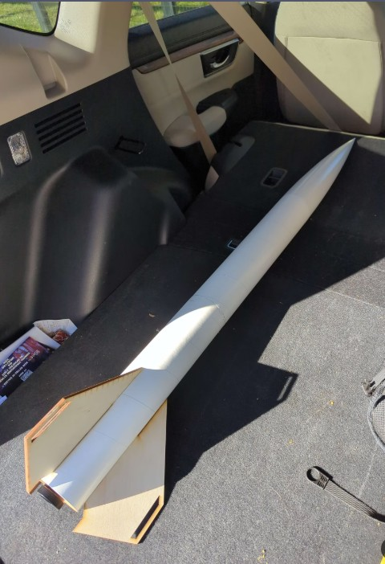
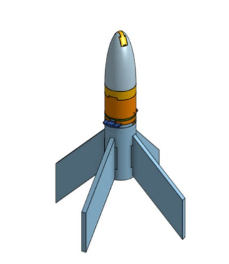
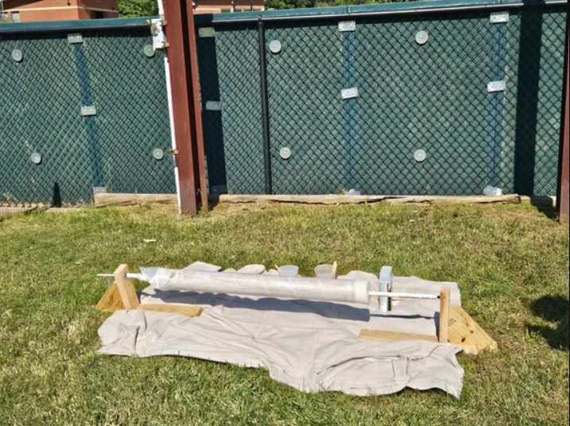
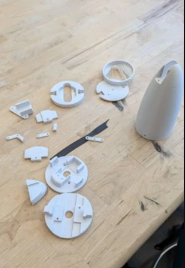
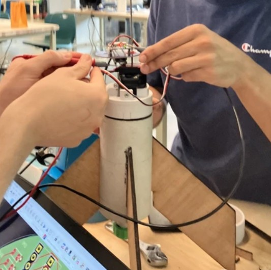

Team-Based Rocket Design, Fabrication, and Testing
Contributed to the design and development of the GMU Rocketry Club's competition rocket for the "Battle of Rockets" challenge. Worked both independently and with small teams to design and build key structural components, emphasizing a strong balance between weight optimization and aerodynamic performance.
Managed to navigate material properties, manufacturing constraints, and competition requirements while using tools like CAD modeling, composite layups, 3D printing, and CNC machining. Delivered precise components such as fins, nose cones, motor mounts, and body tubes. This hands-on experience sharpened skills in design-for-manufacturing and highlighted the importance of smart material choices in aerospace applications.

Used Onshape for team-based parametric modeling of rocket parts like fins, nose cones, and motor mounts. Took advantage of cloud-based version control to keep track of design changes and stay in sync with teammates in real-time, ensuring all assemblies stayed consistent.
Made the most of Onshape's parametric tools to tweak dimensions quickly for different flight needs and structural requirements. Used built-in simulation features for early aerodynamic load checks during the design phase on OpenRocket. Kept collaboration smooth by organizing shared design folders, making design reviews easy and efficient throughout the project.

Fiberglass composite construction was selected for critical components like fin cans, motor mounts, and bulkheads because it offers an excellent strength-to-weight ratio compared to materials like 3D-printed plastics or wood. This choice ensures reliable structural rigidity, handles the heat from ejection charges, and provides non-conductive properties to protect avionics systems. By using one- to two-layer fiberglass body tubes, we achieved aluminum-level strength at almost half the weight, which opens up possibilities for carrying heavier payloads or using larger motors. On top of that, the smooth composite surface drastically reduces aerodynamic drag, unlike the rough finish of 3D-printed parts. During the layup and curing stages, we maintained strict safety practices, including gloves, respirators, and proper ventilation, to ensure both quality and safety.
3D Printing: Used ABS thermoplastic to produce heat-resistant components for motor assemblies, taking advantage of its superior thermal durability compared to PLA. Optimized support structures and infill patterns with Bambu Studio slicing software to strike a good balance between strength and material efficiency. Tackled common ABS printing challenges like bed adhesion and warping by fine-tuning thermal settings for better results. Laser Cutting: Created precise wooden fins using LightBurn software to ensure accurate dimensions critical for aerodynamic stability. Chose laser-cut wooden fins for their lightweight properties, which outperformed 3D-printed options while still providing the required shear strength for flight loads. The quick and consistent production process made it easier to replicate parts and speed up assembly, proving more efficient than additive manufacturing.


This project underscored how crucial material selection is in aerospace design, highlighting the need to choose between composites, thermoplastics, or wood depending on thermal, structural, and weight needs. Working hands-on with different fabrication methods offered practical insight into how manufacturing limitations influence design choices. It also reinforced how valuable rapid prototyping is for testing and refining designs. On top of that, collaborating in a competitive environment really drove home the importance of clear documentation and solid version control when working in a team.
